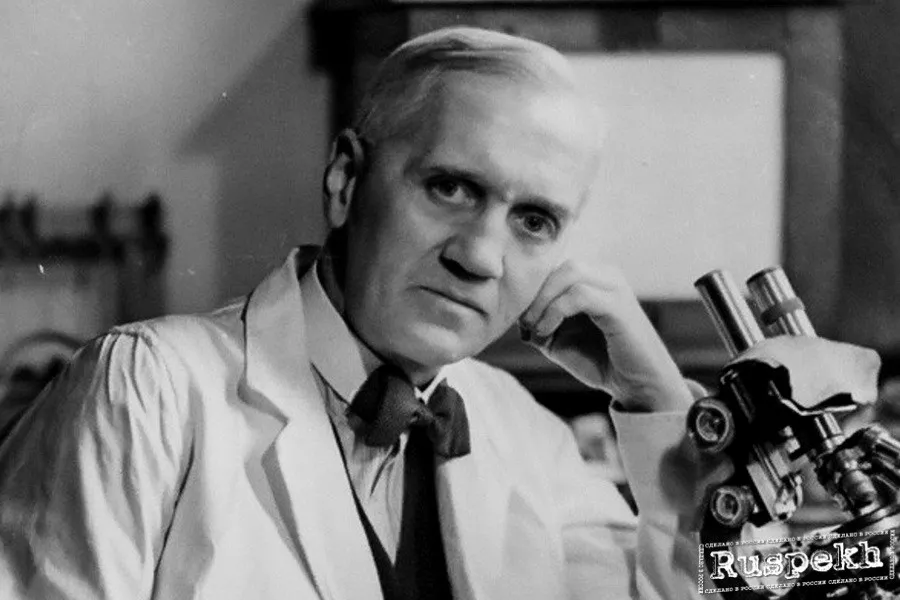

Алгачкы жылдар, билим берүү
Флеминг 1881-жылы 6-августта Шотландиянын Айршир аймагындагы Дарвелге жакын жердеги Лочфилд фермасында төрөлгөн. Ал фермер Хуг Флемингдин (1816–1888), Грейс Стирлинг Мортондун (1848–1928) экинчи аялынан (биринчи никесинен төрт баласы) төрт баланын үчүнчүсү болгон, кошуна дыйкандын кызы. Экинчи жолу атасы 59 жашында турмушка чыгып, Александр (Алек деген ат менен белгилүү) 7 жашында каза болгон.
Он эки жашка чейин Флеминг Дарвелдеги айылдык мектепте, андан кийин дагы эки жыл Килмарнок академиясында окуган. Он төрт жашында Лондонго бир туугандарына көчүп барып, ал жактан жеткирүү кеңсесинде катчы болуп иштей баштаган, ошондой эле Реджент көчөсүндөгү Королдук Политехникалык институттун сабактарына катыша баштаган.
Анын улуу агасы Томас буга чейин офтальмолог болуп иштеген жана андан үлгү алып, Александр да медицинаны окууну чечкен. Анын медициналык окуу жайды тандоосуна анын Сент-Мария ооруканасынын студенттери менен суудагы поло боюнча мелдешине катышканы чоң таасир эткен. Медициналык мектепте Флеминг 1901-жылы стипендияга ээ болгон. Ошондой эле 1906-жылы Лондон университетинин MB жана BS стипендиялары ага кетти.
Ошол учурда, ал медициналык практиканын кандайдыр бир тармагына күчтүү жакын болгон эмес. Хирургиялык иштер анын көрүнүктүү хирург боло аларын көрсөттү. Бирок турмуш аны «лабораториялык медицина» менен байланышкан башка жолго багыттады. Студент кезинде 1902-жылы Ыйык Мария ооруканасына келген патология профессору Альмрот Райттын таасирине кабылган. Райт аскердик медициналык кызматта жүргөндө ич келте оорусуна каршы эмдөө иштеп чыккан. Бирок Райттын бактериялык инфекциялардан жапа чеккен бейтаптарды дарылоо боюнча башка идеялары бар болчу, алардын денесин инфекцияларга "антителолорду" чыгаруу менен дароо жооп берүүгө стимулдашты. Ал бейтаптын канындагы бул антителолордун көлөмүн өлчөөгө аракет кылган. Бул жаңы ыкмаларды жана бир топ эмгекти талап кылды. Райтка кошулган жаштардын тобу, анын ичинде Жон Фриман, Бернард Спилсбери жана Джон Уэллс дагы бул ишти көтөрө албай калышты. Ошондуктан, Флеминг 1906-жылы илимий даражасын алаары менен командага кошулууга чакырылган.
Ушундай жол менен ооруканага караштуу илимий лабораторияда Флеминг элүү жылдан кийин каза болгонго чейин ошол жерде иштеген.
Биринчи дүйнөлүк согуш учурунда Флеминг Королдук медициналык армияда капитан болуп кызмат кылган. Ал жана анын көптөгөн кесиптештери Франциянын батыш фронтундагы майдан госпиталдарында иштешкен. 1918-жылы Флеминг Ыйык Мария ооруканасына кайтып келип, 1928-жылы бактериология профессору болуп шайланган.
Дүйнөлүк атактуулук
20-кылымдын башында дүйнөдө бактериялар пайда кылган оорулар менен күрөшүү маселеси курч болгон. Тынчтык мезгилде болгон сифилис, кургак учук сыяктуу оорулардан тышкары, согуш талаасында жарадар болуп каза болгондор да аз эмес. Бул Флемингди антисептиктерди изилдөөгө түрткөн. Илимпоз ошол кезде ачык жарааттарды дарылоо үчүн кеңири колдонулган карбол кислотасы сыяктуу антисептиктер организмде коргоочу тосмо түзүүчү лейкоциттерди өлтүрүп, ткандарда бактериялардын жашоосуна өбөлгө түзөрүн далилдеген. Бактериялык инфекцияларга каршы натыйжалуу каражатты издөө улантылды.
1922-жылы Флеминг сезгенүүгө каршы жана антисептикалык касиетке ээ болгон литикалык ферменттердин биринчиси болгон лизоцимди кокустан ачкан. Окумуштуу сасык тумоо менен ооруп калып, изилдөө үчүн өзүнүн мурдунан былжырды алган. Флеминг микроорганизмдердин пайда болгон колониясын штаммдары бар 3 стаканга кошту: пневмококк, стафилококк жана AF кокк бактериялары. Изилдөөлөр көрсөткөндөй, вирустун өзү эмес, микроорганизмдердин өсүшүнө тоскоол болот, ал эми бактерияларды лизингге жөндөмдүү фермент. Флеминг өзүнүн ачылышын лизоцим деп атаган жана обочолонгон штамм акыркы аталышты алган - Micrococcus lysodeikticus.
Флеминг эң атактуу ачылышын 1928-жылы кокусунан жасаган. Окумуштуу кесиптештеринин арасында этиятсыздыгы менен белгилүү болгон: эксперименттер аяктагандан кийин бактериялык культуралар салынган чөйчөктөр бир нече жума бою столдун үстүндө тура алган. Башаламандык туу чокусуна жетип, Флеминг тазалоого киришкенде, кызыктуу нерсени өткөрүп жибербөө үчүн ар бир идишти кылдаттык менен карап чыкты. чөйчөктөрдүн биринде, ал көк табылган, анын таң калыштуусу, бактериялардын себилген маданиятын тоскоол. Көктү бөлгөндөн кийин ал көк өскөн «сорпонун» микроорганизмдердин өсүшүнө бөгөт коюучу өзгөчө жөндөмгө, ошондой эле бактерициддик жана бактериологиялык касиетке ээ болгонун аныктаган. Дал ошол учурда дүйнө кийин миллиондогон адамдардын өмүрүн сактап кала турган дарыга ээ болду.
Бирок Флеминг өзү да, илимий чөйрө да ачылышка тиешелүү маани берген эмес. Флеминг тарабынан мурда ачылган лизоцимдин аркасында пенициллинди медицина дүйнөсүнө ачуу мүмкүн болгон. Дал ушул ачылыш Говард Флори менен Эрнст Чейнди пенициллиндин дарылык касиеттерин изилдөөгө алып келген, натыйжада дары изоляцияланган жана клиникалык сыноолорго дуушар болгон. Бирок, бардык сый-урмат жана атак Флемингге кетти. Бактерияларды өстүрүүчү идиштен пенициллиндин кокустан табылышы басма сөзгө бир заматта бүт дүйнөгө тараган сенсациялуу окуяны берди.
Флори, Чейн жана Флеминг 1945-жылы "пенициллинди жана анын ар кандай жугуштуу ооруларды дарылоочу таасирин ачкандыгы үчүн" Нобель сыйлыгын алышкан. Өмүрүнүн калган он жылында илимпоз жыйырма беш Ардак грамота, жыйырма алты медаль, он сегиз сыйлык, он үч сыйлык жана сексен тогуз илимдер академиясынын жана илимий коомдордун ардактуу мүчөсү, ал эми 1944-жылы асылдык. Флеминг өмүрүнүн акырына чейин өсүп кеткен көк кычыткы бар идишти сактап келген.
Жолдун аягы
Белгилүү британиялык микробиолог жана фармаколог Александр Флеминг 1955-жылы 11-мартта 73 жашында Лондондо каза болгон. инфаркттан. Флеминг жашоосунда илимге жана медицинага эбегейсиз салым кошуп, эмгеги үчүн көптөгөн сыйлыктарды жана сыйлыктарды алган.
